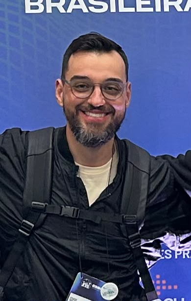
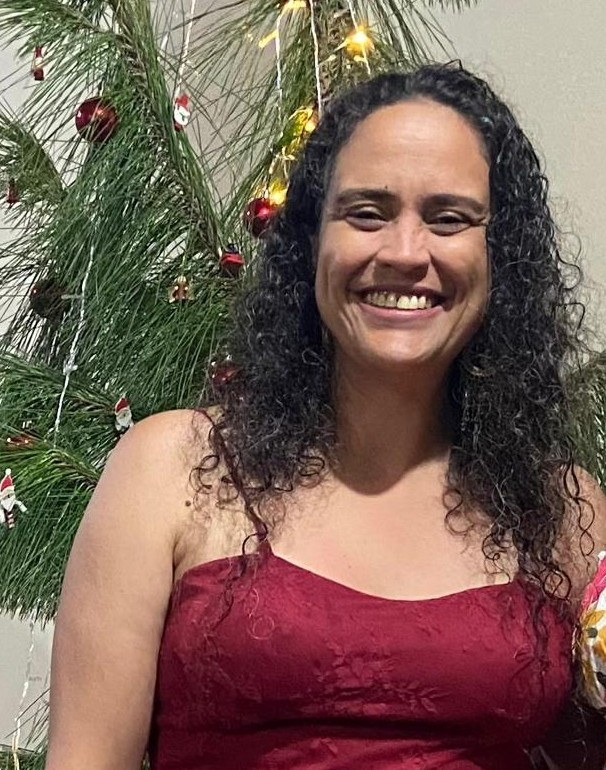
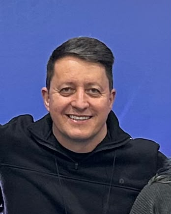
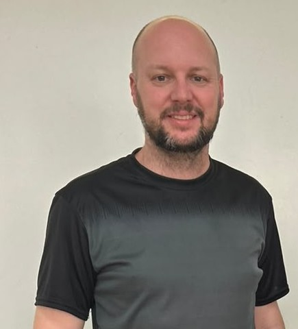

Claudiany Sousa
Professora da área de Computação e coordenadora da MICOMP. Atua na organização científica do evento e na avaliação de trabalhos em diferentes áreas da Computação.
Um encontro científico dedicado à pesquisa, à inovação e ao compartilhamento de soluções que transformam a computação e a sociedade.
A MICOMP tem como objetivo promover a iniciação científica e a divulgação dos trabalhos desenvolvidos pelos estudantes, proporcionando um espaço para a produção, apresentação e compartilhamento do conhecimento acadêmico. O evento busca estimular a aplicação do método científico, das normas de escrita acadêmica e dos princípios éticos na elaboração de trabalhos, além de desenvolver habilidades de comunicação oral e utilização de recursos digitais e audiovisuais. Dessa forma, a MICOMP aproxima os estudantes das práticas de pesquisa, produção científica e socialização do conhecimento na área da Computação.
Professora da área de Computação e coordenadora da MICOMP. Atua na organização científica do evento e na avaliação de trabalhos em diferentes áreas da Computação.
Professor da área de Computação e coordenador do Curso Técnico em Informática. Colabora na avaliação científica de trabalhos nas áreas de Robótica Educacional e Arquitetura de Computadores.

Professor da área de Computação. Colabora na avaliação científica de trabalhos relacionados à Inteligência Artificial e suas aplicações.
Professora da área de Linguagens e pesquisadora do Grupo de Estudos do Campo Discursivo (UFSC). Integra o projeto "É só mais uma crônica", financiado pelo CNPq/FAPESC, e colabora na avaliação de trabalhos nas áreas de Linguística Aplicada Contemporânea e Computação e Gênero.
Professor da área de Computação e coordenador do LiPe. Colabora na avaliação científica de trabalhos relacionados a Banco de Dados e aplicações da Computação na Educação.
Professor da área de Engenharia Mecânica e coordenador da Especialização em Inovação Industrial. Colabora na avaliação de trabalhos relacionados a Empreendedorismo, Inovação Tecnológica e suas aplicações.
Professor da área de Computação e coordenador da Plataforma Azul. Colabora na avaliação científica de trabalhos nas áreas de Sistemas Embarcados e Desenvolvimento Web.
Colabora na avaliação científica de trabalhos relacionados à aplicação da Inteligência Artificial na Saúde e ao desenvolvimento de Tecnologias Assistivas.

Professora da área de Computação e Coordenadora do Programa Logicando. Colabora na avaliação de trabalhos relacionados à Interação Humano-Computador (IHC) e ao desenvolvimento de jogos educativos para o ensino de Lógica.

Professor da área de Computação e coordenador do Curso de Ciência da Computação. Colabora na avaliação científica de trabalhos nas áreas de Computação Ubíqua e Redes de Computadores.
Professor da área de Computação. Colabora na avaliação científica de trabalhos relacionados a Sistemas Embarcados e Sistemas de Tempo Real.

Professor da área de Computação, com atuação em Desenvolvimento Web, Internet das Coisas (IoT) e Sistemas Digitais. Colabora na fabricação digital de peças e troféus para a MICOMP, utilizando tecnologias como usinagem CNC.
Acompanhe os canais oficiais para receber novidades sobre inscrições, submissões e programação.